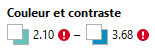

Critère 3.1 Dans chaque page web, l'information ne doit pas être donnée uniquement par la couleur.
Critère 3.2 Dans chaque page web, le contraste entre la couleur du texte et la couleur de son arrière-plan est-il suffisamment élevé.
- Contraste idéal AAA (7:1)
- Contraste minimum AA (4,5:1)
Utilisation de l'onglet Accessibilité des outils de developpement de Firefox
